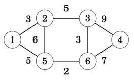
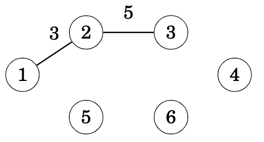
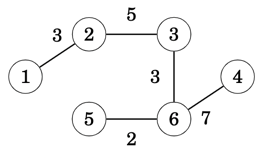

Prim's MST Algorithm
Prim’s algorithm resembles Dijkstra’s algorithm. The difference is that Dijkstra’s algorithm always selects an edge whose distance from the starting node is minimum, but Prim’s algorithm simply selects the minimum weight edge that adds a new node to the tree
Approach
The algorithm first adds an arbitrary node to the tree. After this, the algorithm always chooses a minimum-weight edge that adds a new node to the tree. Finally, all nodes have been added to the tree and a minimum spanning tree has been found
To illustrate how the algorithm works let's consider the following input graph

When we start, the minimum spanning tree has no edges

We then select an arbitrary node, in this case 1, and from edges (1,2),(1,5) we choose the edge (1,2) that has the lowest weight, and we then add it into the output tree. At this point in time, nodes [1,2] are spawned into the evolving tree.

With edge (1,2) added to the tree, we're looking to all edges that cross between the tree and the non-tree nodes. In this case we have edges [(1,5),(2,5),(2,3)] with (2,3) being the one that has the lowest weight from all known crossing edges.
At this point the tree contains nodes [1,2,3] with nodes remaining outside the tree as [5,6,4]

We repeat the process, always expanding one node at a time and adding to the tree the lowest weight edge each time and until there are no more nodes remaining outside the tree.

Min-Ordered edge BinaryHeap
To provide a minimum-ordered edge list, we make use of the BinaryHeap collection with the edge's weight as the prioritisation key. The following Step implementation provide us with the desirable result
/// BinaryHeap Step structure containing `Edge(src,(dst,cost))` tuple
/// The `cost` is only used as the prioritisation key for the `Heap`
/// Implementing MinHeap through reverse comparison of Other against Self
impl PartialOrd for Edge {
fn partial_cmp(&self, other: &Self) -> Option<Ordering> {
match other.1 {
N(_) => other.partial_cmp(self),
NC(_, cost) => {
let Edge(_,NC(_,sc)) = self else { panic!("") };
cost.partial_cmp(sc)
}
}
}
}
impl Ord for Edge {
fn cmp(&self, other: &Self) -> Ordering {
self.partial_cmp(other).unwrap()
}
}
Implementation
Few key points related to the below implementation
- We hold the evolving tree in a
Graphstructure with itsnodesHashSetrepresenting the tree's Component for queries - When we spawn a new node, we don't search for the minimum weight edge, rather we store all crossing edges in the
heap; - Edges added in the
heapmight go stale, that is, future iterations cause edges nodes to be pulled inside thetreecomponent, hence when extracting the min-weight edge from theheapwe need to ensure the edge isn't stale.
As a result, the following implementation consolidates all of the above into the Prim's algorithm implementation.
/// MST using Prim's algorithm implementation
pub fn mst_prim(&self) -> Option<Graph> {
// Create an empty Graph/Tree to add one edge at a time
// we'll be using g.node as the Tree's Component invariant,
// that is, the Component that contains all vertices absorbed by the Tree
let mut tree = Graph::new();
// Min-Ordered heap with all edges found crossing the evolving tree
let mut heap = BinaryHeap::<Edge>::new();
// seed with first vertex
let &start = self.nodes.iter().next().unwrap();
heap.push(Edge(start, NC(start, 0)));
// spawn a node at a time until we have spawned all graph nodes
// while tree component isn't equal input component
while tree.nodes != self.nodes {
// spawn a new edge node from the queue with the smallest edge weight
let src = match heap.pop() {
// if the queue is empty, but still have nodes to spawn
// then either (a) the graph is not connected or (b) is a directed graph
None => return None,
// spawn the destination node from edge
Some(Edge(_, NC(dst, _))) => dst,
Some(Edge(_, N(_))) => panic!("mst_prim(): Extracted edge using wrong NodeType::N"),
};
// Add all edges that are crossing the tree Component given the spawned node
// and have not yet been spawned, that is, they are NOT already part of tree component
heap.extend(self.edges.get(&src)
.unwrap_or_else(|| panic!("mst_prim(): Node ({src}) has not edges; Graph is not undirected or connected"))
.iter()
// remove any edge node already in the mst, part of Component X
.filter(|&&dst| !tree.nodes.contains(&dst.into()))
// push edges crossing Component X, that is,
// src IN Component X, dst NOT IN Component X
.map(|&dst| Edge(src, dst))
);
// find the min-weigh edge that is crossing the current tree component
// don't remove from heap as we need to spawn dst node for the next iteration
while let Some(&edge) = heap.peek() {
let Edge(src, dst) = edge;
// Is this edge a stale or a valid one, that is, crosses the tree component
if HashSet::from([src, dst.into()]).is_subset(&tree.nodes) {
// Some times heap holds older edges that, after few iterations they get stale,
// that is, both edges nodes have been moved into the tree component
heap.pop();
} else {
// either src or dst edge nodes are outside the tree component
// hence add the edge into the tree
tree.push_edge(edge);
// exit the while loop since we've found the edge with the min weight
break
}
}
}
Some(tree)
}